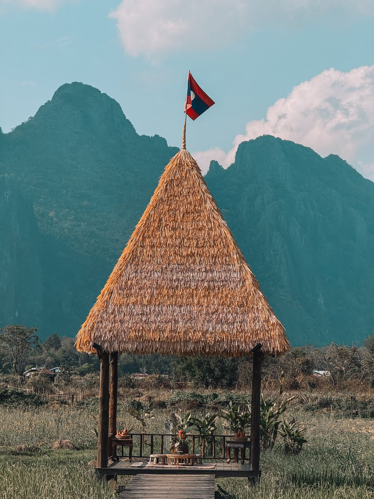
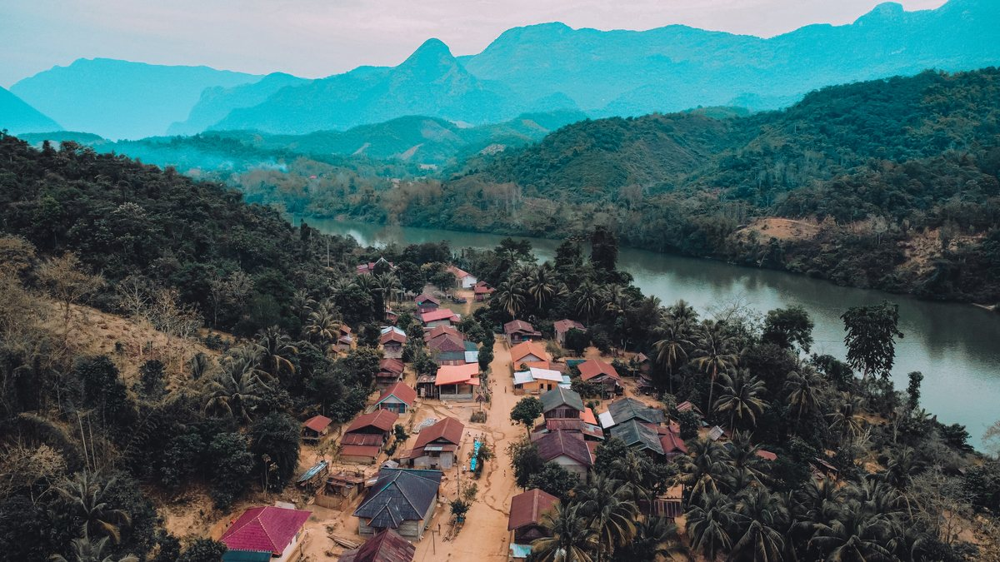
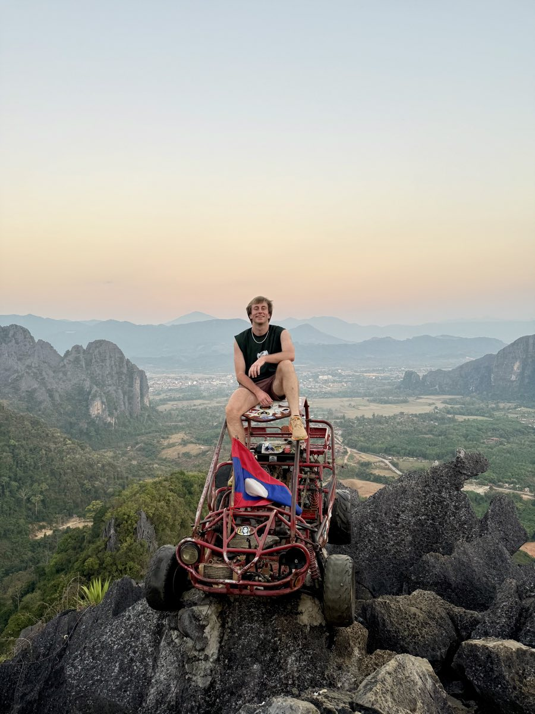
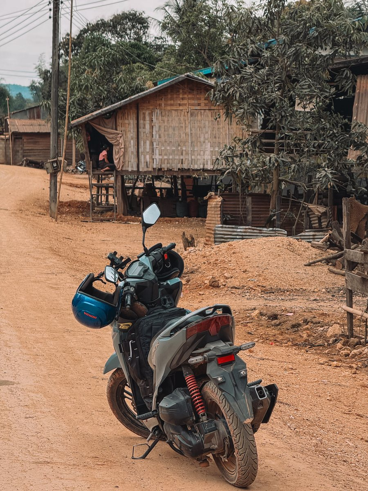
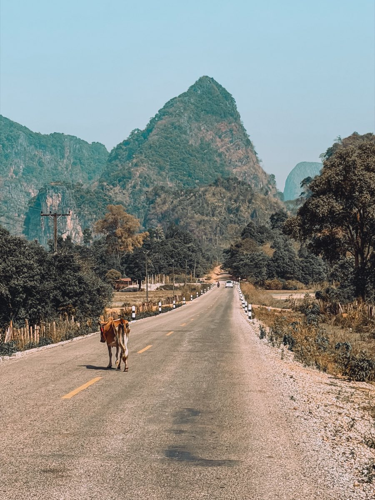
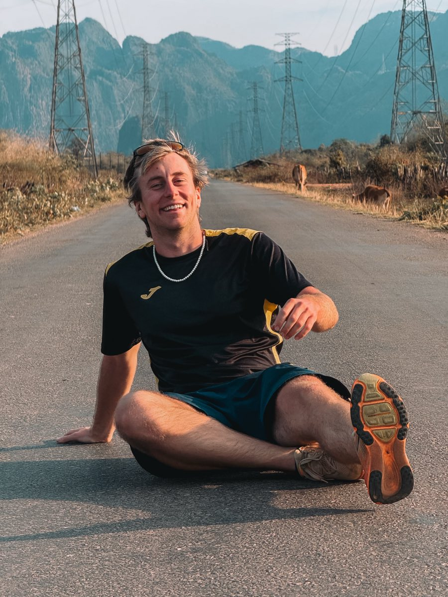

Quand partir
La saison sèche va de novembre à avril. C'est la période la plus simple pour circuler, surtout si tu comptes rouler en scooter.
De mai à octobre, c'est la mousson. Il pleut fort, souvent en fin de journée, et certaines pistes deviennent compliquées.
Mars et avril sont chauds. Dans le nord, la fumée des brûlis agricoles peut voiler le paysage pendant plusieurs semaines.

À compléter : la période de notre voyage et la météo qu'on a eue.
Le budget réel
Le Laos reste un pays où l'on voyage pour peu, à condition de rester sur les transports locaux et les guesthouses.
À compléter : notre budget moyen par jour, le prix d'une nuit, d'un repas, d'une location de scooter et d'un plein d'essence.
Mon itinéraire
Six étapes, une boucle qui part de Vientiane et qui y revient.
- VientianeLe départ et l'arrivée de la boucle
- Nong KhiawVillage au bord de la Nam Ou, entre les parois
- Luang PrabangAncienne capitale royale et cascades de Kuang Si
- Vang ViengKarsts, montgolfières et points de vue
- Boucle de ThakhekTrois ou quatre jours de scooter et la grotte de Konglor
- Retour à VientianeLa boucle se referme
Vientiane
La capitale se visite vite. Le Mékong en fin de journée, le Patuxai et le That Luang tiennent dans une journée.
C'est surtout le point de départ et le point d'arrivée de la boucle.
Nong Khiaw
Un village posé au bord de la Nam Ou, encerclé de parois calcaires.
Les points de vue se montent à pied depuis le village. La montée est raide et courte, et la vue porte sur toute la vallée.

Luang Prabang
Ancienne capitale royale, classée au patrimoine mondial. Temples, marché de nuit, aumône des moines au lever du jour.
Les cascades de Kuang Si sont à une trentaine de kilomètres de la ville.
Vang Vieng
Des karsts de tous les côtés, une rivière au milieu, et une ville qui vit du plein air.
Les montgolfières décollent au lever du soleil. Les points de vue et les lagons se rejoignent en scooter ou en buggy.

La boucle de Thakhek
Une boucle en scooter dans le centre du pays, à faire en trois ou quatre jours.
Le grand morceau est la grotte de Konglor : sept kilomètres de rivière souterraine, traversés en pirogue.

Retour à Vientiane
La boucle se referme là où elle a commencé.
À compléter : le nombre de nuits à chaque étape, et comment on a relié les villes entre elles.
Se déplacer
Le train rapide relie Vientiane, Vang Vieng et Luang Prabang en quelques heures. Les places partent vite, il vaut mieux réserver en avance.
Le reste se fait en bus, en minivan ou en scooter. Les distances paraissent courtes sur la carte. Les routes de montagne les rallongent toujours.

Où dormir

À compléter : où on a dormi à chaque étape, le type de logement et le prix.
À ne pas manquer
Les points de vue de Nong Khiaw, les cascades autour de Luang Prabang, le lever de soleil sur Vang Vieng et la grotte de Konglor.
Le reste dépend du temps que tu as.

À compléter : ce qui nous a le plus marqués, et ce qu'on pourrait sauter sans regret.
Les erreurs à éviter
Partie à écrire.
Ce que j'avais dans mon sac
Partie à écrire.
Les liens et le matériel cités
Les plateformes de réservation, eSIM, banques et assurances que j'utilise en voyage sont réunies sur une seule page, avec mes codes de parrainage.